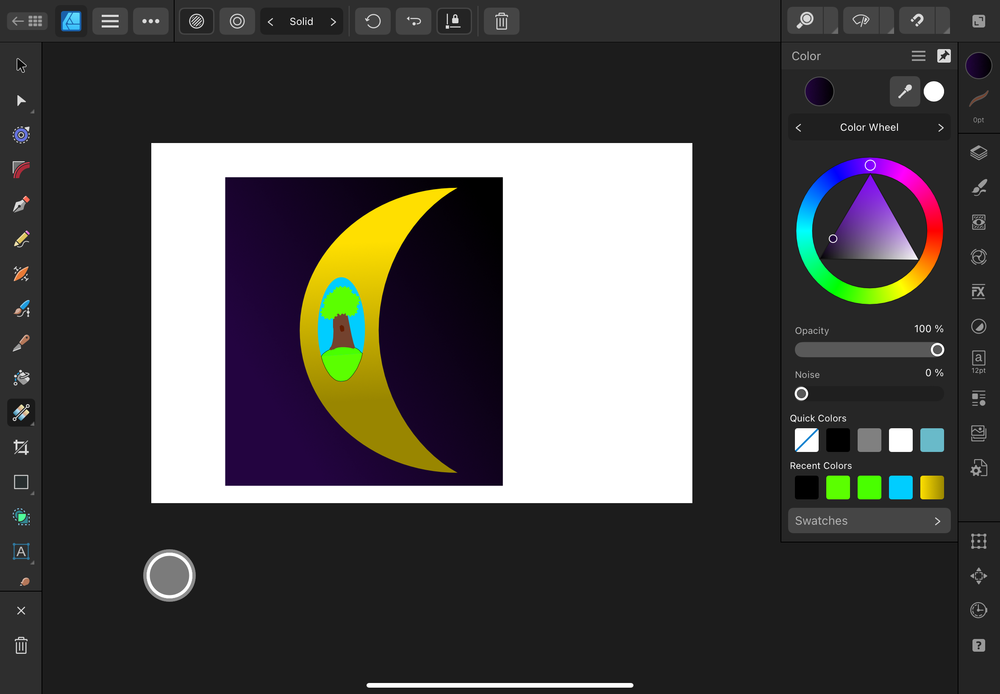

3D CAD Prototype
In this section, I used a 3D CAD program to design a simple prototype of my final project. The prototype includes general dimensions, but they are not final.
Why I Chose OnShape: I chose to use OnShape because of my prior expereince of the program and the simplicity of it, that is useful for a basic model.
Step-by-Step Process
Below is a detailed step-by-step process of how I created the 3D model.
Step 1: Base

I began by sketching out a base for the clinostat. I then extruded it, but I extruded the middle less than the sides, which will hold up the machine.
Step 2: Outer Shell

Then, I designed the outershell for the clinostat, which is on an axis attached to the sides. The outer shell has a rod inside for the inner compartments to spin around.
Step 3: Second Tier

In this step, I made the mid-tier shell, which will eventually hold the inner tier, which has the inner compartment.
Step 4: Inner Tier

Here, I made the shell for the inner compartment. This is the very center point of the clinostat, where the plant would technically be held.
Step 5: Closed Compartments

Then, I finished closing in the compartments. All the tiers are closed in and are able to rotate on an axis.
Step 6: Final Rendition
This is an angled fronyt view of my design. This shows all the compartments at once and it is simple to see how it would work.
Step 7: Dimensions
This displays the rough estimate of the dimensions of how a prototype of the clinostat would be. This is by no means the final dimensions or even the sizing that we will use in our final project.
2D CAD Logo Design
In this section, I used Affinity Design to create a logo draft for our makeshift company running the project.
Why I Chose Affinity Design: I selected Affinity Design because of its many useful tools and capabilites, and its versatility for logo creation.
Step-by-Step Process
Below is a detailed step-by-step documentation of how I designed the logo. Each step includes screenshots and explanations.
Step 1: Initial Shape

To start, I created a simplpe shape. I wanted it to look like a crescent moon. I then filled it with a yellow coloring that darkened towards the bottom.
Step 2: Center Oval
Next, I created a blue oval in the center of the moon shape. This will hold the rest of my design. I colored it blue, kind of like a sky background.
Step 3: Hill

In this step, I created a green mound. This was supposed to be a hill top.
Step 4: Tree Trunk

Next I created a brown tree trunk. I added a darker brown blob in the middle to show a kind of hole in the tree.
Step 5: Tree Leaves

I finished up the tree by adding a bush of leaves to the top.
Step 6: Creating Background

Here, I started to create a background for the logo, that was automatically set to green.
Step 7: Space Background
I changed the background to a dark purple, to represent outer space.
Step 8: Stars
Finally, I added stars as finishing touches to the background.
Step 9: Final Logo

Here, my final logo is shown. It is a moon in space, with a tree in the middle of it.